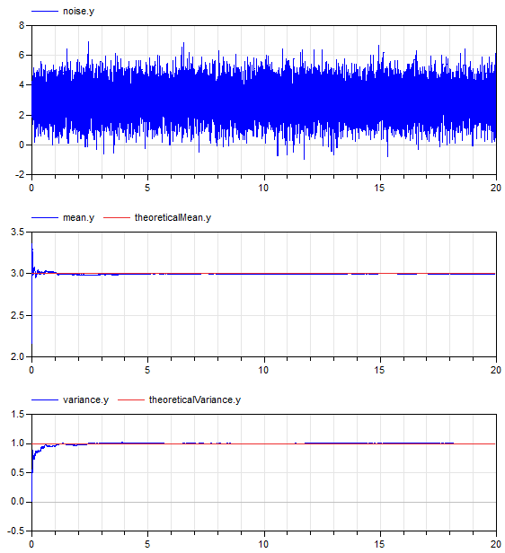
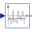
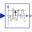

NormalNoisePropertiesDemonstrates the computation of properties for normally distributed noise |
|
Diagram
{kind=link}
Information
This information is part of the Modelica Standard Library maintained by the Modelica Association.
This example demonstrates statistical properties of the Blocks.Noise.NormalNoise block using a normal random number distribution with mu=3, sigma=1. From the generated noise the mean and the variance is computed with blocks of package Blocks.Math. Simulation results are shown in the next diagram:

The mean value of a normal noise with mu=3 is 3 and the variance of normal noise is sigma^2, so 1. The simulation results above show good agreement (after a short initial phase). This demonstrates that the random number generator and the mapping to a normal distribution have good statistical properties.
Parameters (5)
| mu |
Value: 3 Type: Real Description: Mean value for normal distribution |
|---|---|
| sigma |
Value: 1 Type: Real Description: Standard deviation for normal distribution |
| pMean |
Value: mu Type: Real Description: Theoretical mean value of normal distribution |
| var |
Value: sigma ^ 2 Type: Real Description: Theoretical variance of uniform distribution |
| std |
Value: sigma Type: Real Description: Theoretical standard deviation of normal distribution |
Outputs (2)
| meanError_y |
Default Value: meanError.y Type: Real |
|---|---|
| sigmaError_y |
Default Value: sigmaError.y Type: Real |
Components (11)
| globalSeed |
Type: GlobalSeed |
|
|---|---|---|
| noise |
Type: NormalNoise |
|
|  | mean |
Type: ContinuousMean |
| variance |
Type: Variance |
|
| theoreticalVariance |
Type: MultiProduct |
|
| meanError |
Type: Feedback |
|
| theoreticalMean |
Type: Constant |
|
| varianceError |
Type: Feedback |
|
| theoreticalSigma |
Type: Constant |
|
|  | standardDeviation |
Type: StandardDeviation |
| sigmaError |
Type: Feedback |